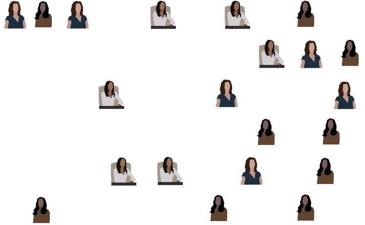
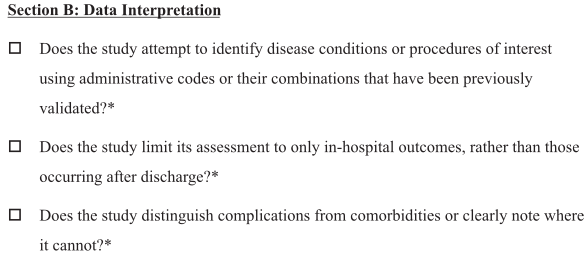

A Longitudinal Study of the Effect of Renal Failure on Readmission Rates of Patients with Clostridium Difficile
Brian Detweiler
April 20, 2018
About me
- University of Nebraska, Omaha
- B.S. Computer Science and Mathematics (2009)
- M.S. Mathematics, Data Science (May, 2018)
- Software Engineer (2004-present)
- Flight Operations, U.S. Army National Guard (2000-2009)


Agenda
- Introduction and motivation
- C. diff and renal failure
- The data
- Methodology
- Results
Introduction and motivation
Why are we here?
Pr(You)
- \(Pr(\text{boy meets girl}) = \frac{1}{20000}\)
- \(Pr(\text{same boy knocks up same girl}) = \frac{1}{2000}\)
- \(Pr(\text{right sperm meets right egg})\) = 1 in 400 quadrillion
- \(Pr(\text{lineage})\): 1 in \(10^{45000}\)
- \(Pr(\text{you})\) = 1 in \(10^{2685000}\)
So what’s the probability of your existing? It’s the probability of 2 million people getting together – about the population of San Diego – each to play a game of dice with trillion-sided dice. They each roll the dice, and they all come up the exact same number – say, 550,343,279,001.
A miracle is an event so unlikely as to be almost impossible. By that definition, I’ve just shown that you are a miracle.
Benazir, A. What are the chances of your coming into being? (2011)
Data Science

Finding a project
- üö´ Union Pacific PTC data (2016-2017) - SCRAPPED
- ✅ HCUP project through Creighton
asdf
6
7
8
9
10
11
12
13
14
15
16
17
18
19
20
21
22
23
24
25
C. diff and renal failure
C. diff
- Clostridium difficile
- Gram-positive, rod-shaped, Endospore-forming bacterium

Scientific Classification
Kingdom |
Bacteria |
Phylum |
Firmicutes |
Class |
Clostridia |
Order |
Clostridiales |
Family |
Clostridiaceae |
Genus |
Clostridium |
Species |
C. difficile |
Where it lives
- Intestinal tract of healthy people
- 13.6% of children, 5.5% of adults are colonized
Tetro, J. Clostridium difficile Is More Common Than You Think (2016)
- 13.6% of children, 5.5% of adults are colonized
- Soil
- Water
- Feces of infected animals and humans
- Surfaces for up to 5 months
Signs / symptoms
- Diarrhea
- Fever
- Nausea
- Abdominal pain
- Pseudomembranous colitis
- Toxic megacolon
- Perforation of the colon
- Sepsis
CDI Risk

How CDI Spreads

Renal (kidney) disease
- Acute kidney injury (AKI)
- Chronic kidney disease
- Stages 1-4
- Stage 5 - End-stage renal disease (ESRD)
- Dialysis or transplant
Renal disease signs / symptoms
- Nausea
- Vomiting
- Loss of appetite
- Fatigue and weakness
- Sleep problems
- Changes in urine volume
- …much more
AKI Causes
- Decreased bloodflow
- Direct damage to kidneys
- Urinary tract blockage
AKI Risks
- Hospitalization
- Advanced age
- Blood vessel blockage in arms/legs
- Diabetes
- High blood pressure
- Heart failure
- Kidney diseases
- Liver diseases
CKD Causes
- Type I/II diabetes
- High blood pressure
- …much more
CKD risk
- Cardiovascular disease
- Smoking
- Obesity
- Being African-American, Native American or Asian-American
- Family history of kidney disease
- Abnormal kidney structure
- Older age
Measuring kidney function
- Glomerular Filtration Rate (GFR)
- MDRD
\[ GFR = 175 \times S_{cr} - 1.154 \times \text{Age}^{-0.203} \times 0.742 \cdot I(\text{F}) \times 1.212 \cdot I(\text{AA}) \]
- CKD-EPI
\[ GFR = 141 \times min\bigg(\frac{S_{cr}}{\kappa}, 1\bigg)^{\alpha} \times max\bigg(\frac{S_{cr}}{\kappa}, 1\bigg)^{-1.209} \\ \times 0.993^{\text{Age}} \times 1.018 \cdot \text{I}(\text{F}) \times 1.159 \cdot \text{I}(\text{AA}) \]
- F is female sex
- AA is African American race
- I is 1 if true, else reciporcal of preceding term
- \(S_{cr}\) is serum creatinine in mg/dL
- \(\kappa\) is 0.7 for females and 0.9 for males
- \(\alpha\) is -0.329 for females and -0.411 for males
CKD Stages
| Stage | Description | GFR/Kidney Function |
|---|---|---|
1 |
Normal function |
90+/90%+ |
2 |
Mild loss |
60-89/60-89% |
3 |
Mild to severe |
30-59/30-59% |
4 |
Severe |
15-29/15-29% |
5 |
Kidney failure (ESRD) |
15 or less/15% or less |
End-stage renal disease (ESRD)
- When stage 5 is reached
- Dialysis or kidney transplant
Readmissions
- If hospital has “excess readmissions”, penalties are assessed
- 30-day risk standardized measure to calculate Payment Readjustment Factor (PRF)
All-cause unplanned readmissions to the same or another applicable acute care hospital, ocurring within 30 days - for any reason, regardless of principal diagnosis - from the index admission are counted in this measure. Some planned readmissions are not counted. HRRP
\[ \text{PRF} = 1 - min\bigg(0.03, \sum_{dx} \frac{\text{Payment}(dx) \cdot max\big((\text{ERR}(dx) - 1.0), 0\big)}{\text{All payments}}\bigg) \]
- Where \(dx\) is one of six measure cohorts, incl heart failure, pneumonia, et. al.
- ERR is a hospital’s performance measure \(dx\), and payment refers to base operating DRG payments.
14
15
16
17
18
19
20
21
22
23
24
25
The data
1
2
3
4
5
6
7
8
9
10
11
12
13
14
15
16
17
18
19
20
21
22
23
24
25
Methodology
A fun experiment
- Step 1: Pick a random percentage. e.g. 54%, 28%, 77%, etc.
- Step 2: Type that number into Google followed by “of Americans”
- Step 3: Follow rabbit hole for hours

Simple random sample
- Pólya urn model
- With (SRSWR) or Without Replacement (SRSWOR)
- With replacement - makes use of i.i.d. assumption
- Without replacement - not i.i.d. but still exchangeable
- Requires access to the entire population

Sampling design
| Sampling Plan | Design-based inference | Model-based inference |
|---|---|---|
Probability sample |
A |
C |
Model-dependent sample |
B |
D |
Quota sampling |
E |
F |
Convenience sampling |
G |
H |
Snowball sampling |
I |
J |
Peer nomination |
K |
L |
Design effects

Design effects
- “deft”
- Similar to variance inflation factor (VIF)
- Effective sample size
\[ D^2(\hat{\theta}) = \frac{SE(\hat{\theta})^2_{complex}}{SE(\hat{\theta})^2_{srs}} = \frac{var(\hat{\theta})_{complex}}{var(\hat{\theta})_{srs}} \]
\[ n_{eff} = \frac{n_{complex}}{d^2(\hat{\theta})} \]
Clustering
- Grouping people by geographic regions
- SRS to choose a geographic region

Clustering

Stratification

Stratification
Weighting
- \(N = 51\)

Weighting
- \(N_{men} = 30\)
- \(p_{men} = \frac{30}{51} = 0.588\)
Weighting
- \(N_{women} = 21\)
- \(p_{women} = \frac{21}{51} = 0.412\)

Weighting
- \(N_{women} = 21\)
- Women Odds Ratio: \(\frac{p_{women}}{p_{men}} = \frac{0.588}{0.412} = 1.427\)
- Men Odds Ratio: \(\frac{p_{men}}{p_{women}} = \frac{0.412}{0.588} = 0.701\)
H-CUP Nationwide Inpatient Sample
- Healthcare Cost and Utilization Project
- Must be purchased
NIS Sampling Design
- 1988-2011: 100% sample of 20% of HCUP hospitals
- 2012-present: 20% sample of 100% of HCUP hospitals
NIS Complex Survey Design
- Clustered on hospital ID
- Weights included in
discwtfield for national estimates - 1988-2011: Stratified by census region and bed size
- 2012-present: Stratified by census division and bedside
- Region 1 (Northeast)
- Division 1 (New England) -Division 2 (Mid Atlantic)
- Region 2 (Midwest)
- Division 3 (East North Central)
- Division 4 (West North Central) (incl. Nebraska)
- Region 3 (South)
- Division 5 (South Atlantic)
- Division 6 (East South Central)
- Division 7 (West South Central)
- Region 4 (West)
- Division 8 (Mountain)
- Division 9 (Pacific)
- Region 1 (Northeast)
NIS dimensions
- Big data?
- Definitely large data
- ~3GB per year (raw CSV)
Importance of survey design
- Treating as SRS
summary(lm(los~age, data=cdiff))##
## Call:
## lm(formula = los ~ age, data = cdiff)
##
## Residuals:
## Min 1Q Median 3Q Max
## -14.19 -7.12 -3.98 2.27 349.01
##
## Coefficients:
## Estimate Std. Error t value Pr(>|t|)
## (Intercept) 14.190744 0.187955 75.50 <2e-16 ***
## age -0.043275 0.002687 -16.11 <2e-16 ***
## ---
## Signif. codes: 0 '***' 0.001 '**' 0.01 '*' 0.05 '.' 0.1 ' ' 1
##
## Residual standard error: 13.94 on 73264 degrees of freedom
## Multiple R-squared: 0.003528, Adjusted R-squared: 0.003514
## F-statistic: 259.4 on 1 and 73264 DF, p-value: < 2.2e-16Importance of survey design
- Accounting for survey design with R survey package
library('survey')
cdiff.design <- svydesign(ids = ~hospid, data = cdiff, weights = ~discwt, strata = ~nis_stratum, nest=TRUE)
summary(svyglm(los~age, design=cdiff.design))##
## Call:
## svyglm(formula = los ~ age, design = cdiff.design)
##
## Survey design:
## svydesign(ids = ~hospid, data = cdiff, weights = ~discwt, strata = ~nis_stratum,
## nest = TRUE)
##
## Coefficients:
## Estimate Std. Error t value Pr(>|t|)
## (Intercept) 13.95231 0.55033 25.353 < 2e-16 ***
## age -0.04657 0.00637 -7.311 6.27e-13 ***
## ---
## Signif. codes: 0 '***' 0.001 '**' 0.01 '*' 0.05 '.' 0.1 ' ' 1
##
## (Dispersion parameter for gaussian family taken to be 180.579)
##
## Number of Fisher Scoring iterations: 2SRS vs. complex design
SRS line in red, complex design in blue
Research design checklist
Khera and Krumholz, 2017

Data interpretation checklist
Khera and Krumholz, 2017

Data analysis checklist
Khera and Krumholz, 2017

11
12
13
14
15
16
17
18
19
20
21
22
23
24
25
Results
1
2
3
4
5
6
7
8
9
10
11
12
13
14
15
16
17
18
19
20
21
22
23
24
25
Acknowledgements
Very special thanks
- Renuga Vivekanandan, M.D.
- Ryan Walters, Ph.D.
- Dora Matache, Ph.D.
References and further reading
- Heeringa, S., West, B. T., Berglund, P. A., Applied Survey Data Analysis, 2nd Ed., CRC Press (2017)
- Kalton, G., Introduction to Survey Sampling, SAGE Publications (1983)
- Khera R. and Krumholz H., With Great Power Comes Great Responsibility: Big Data Research From the National Inpatient Sample, Circulation: Cardiovascular Quality and Outcomes (2017)
- Lumley, T. R Package ‘survey’, (2018)
Thank you!